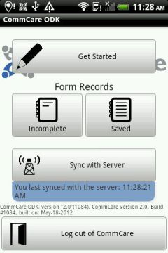
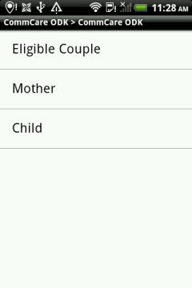
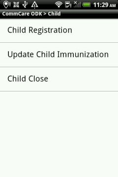
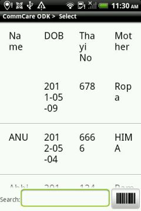
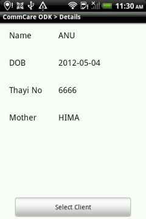
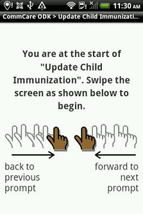
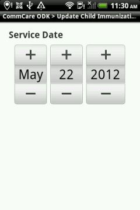
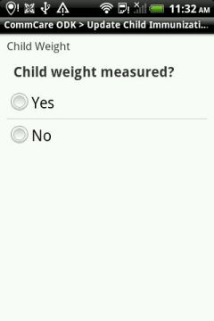
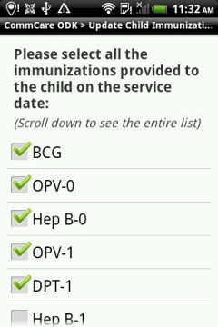

Current state
This is what we have today. When a child has been immunized, for example,
starting from the Dristhi application, an ANM needs to go through these
10 screens below to submit immunization details for one child.










What we should aim for
At the very least, we should get the interactions between the apps to something like this:
To be able to get to this stage, we will need to pass to the CommCare ODK application these pieces of information:
- Form to be opened (the namespace of the form).
- Case ID (so that the patient selection can be skipped).
- Possibly, some extra information which can be used to fill in details. For instance, village details or ANM phone number.